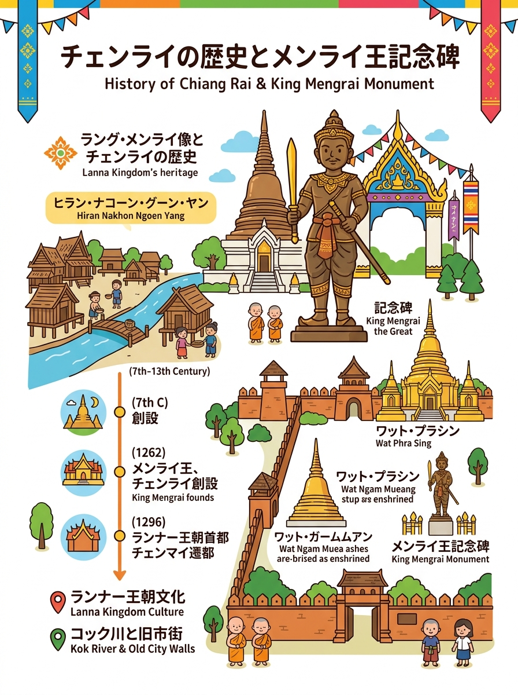
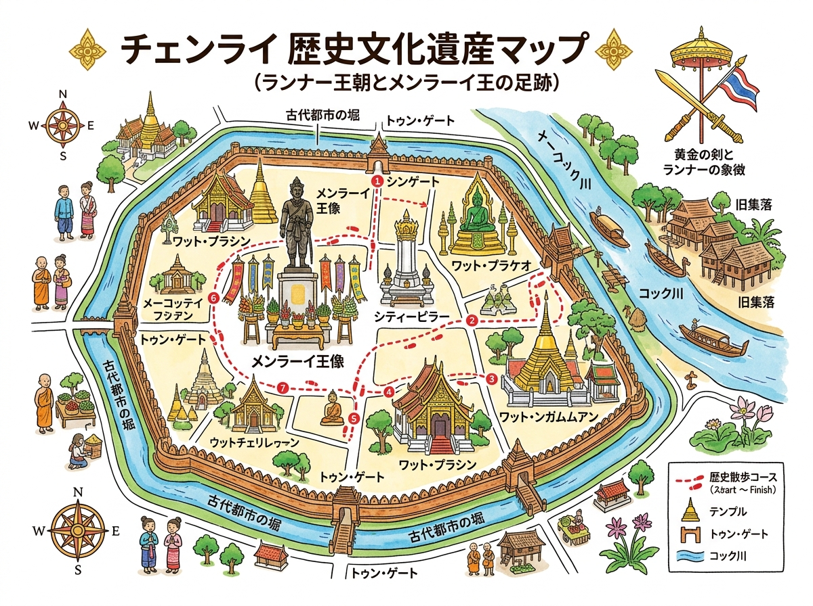

01
メンラーイ王記念碑（King Mengrai the Great Monument / อนุสาวรีย์พ่อขุนเม็งรายมหาราช）
芸術局彫刻家パーコーン氏による実物1.5倍の威厳ある青銅像（高さ約3m）。古代ランナー国王正装で剣を携える。背後には黄金の三連トゥン（幟旗）がそびえる。市民・旅行者の祈願スポット。
ランナー王朝の祖マンライ王によるチェンライ建国の歴史と、ゆかりの史跡を巡る歴史シート。
クリックすると拡大して詳細を確認・印刷できます。

旅行者の持ち歩き・印刷に適した手書き風インフォグラフィック。

位置関係やルート、全体像を俯瞰できるワイドデザイン。
現地調査および公的データに基づく最新詳細情報。
芸術局彫刻家パーコーン氏による実物1.5倍の威厳ある青銅像（高さ約3m）。古代ランナー国王正装で剣を携える。背後には黄金の三連トゥン（幟旗）がそびえる。市民・旅行者の祈願スポット。
黄金の仏塔（仏舎利奉納）。メル山（須弥山）宇宙観を模した三角形基壇と108本の花崗岩石柱群（サドゥー・ムアン）。メーコク川とチェンライ盆地を一望する絶景。
本堂内陣のチェンセーン様式本尊（プラ・プッタシヒン模刻）、伝統ランナー木造建築様式。国民的芸術家タワン・ダッチャニー師による「地水火風」の大扉木彫彫刻。ガラスの仏堂。
カナダ産極上翡翠で彫られた「プラヨーク・チェンライ（翡翠仏）」、木造伝統建築「ホー・プラヨーク」、国内最高峰の美しさを誇る青銅大仏「プラチャオ・ラーントーン」、宝物館。
チェンセーン〜メーサイ近郊に残る古代都市遺構（ウィアン・パーンカムの三重土塁・二重濠跡等）。部族社会からランナー国家へと発展したタイ北部最古級の歴史的土台。